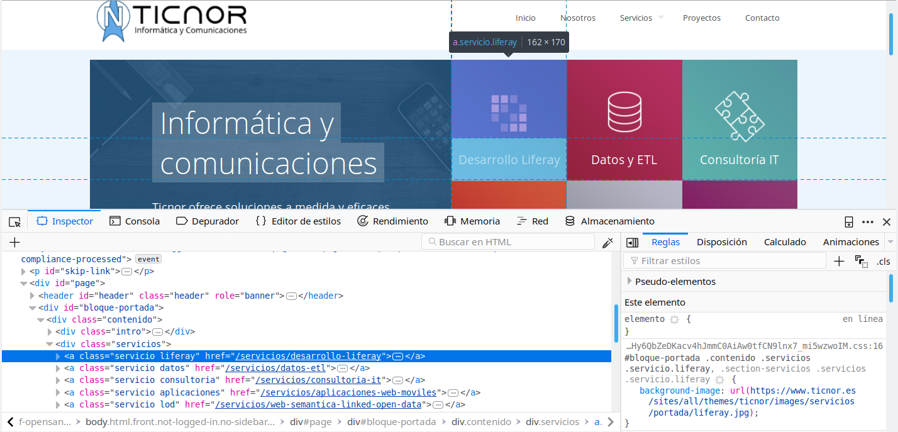

Python 101
Sesión 4
Alejandro Villar (avillar@ticnor.es)
23 Octubre 2018
Expresiones regulares
Expresiones regulares
Qué es una Expresión regular
- Expresión regular (regex, regexp): Patrón de búsqueda de texto
- Ejemplo:
b{2,5}-> “Entre 2 y 5 veces ‘b’”\. +-> “Un punto seguido de uno o más espacios”
Conceptos básicos (I)
- Alternación (una cosa u otra)
- Ejemplo:
gris|verde
- Ejemplo:
- Agrupación (juntas cosas)
- Ejemplo:
s(o|ó)lo
- Ejemplo:
- Comodín (el punto):
- Ejemplo:
s.lo
- Ejemplo:
- Caracteres especiales: ¡escapar con
\!
Conceptos básicos (II)
- Cuantificación (una cosa n veces)
?= “cero o una veces”*= “cero o más veces”+= “una o más veces”{n}= “n veces”{n,}= “n o más veces”{n,m}= “entre n y m veces”
abc? = ab / abc
abc+ = abc / abcc / abccc / ...
abc* = ab / abc / abcc / ...
abc{2,3} = abcc / abcccConceptos básicos (III)
- Clases de caracteres:
[abc]= “‘a’ o ‘b’ o ‘c’”[a-z]= “carácter de la ‘a’ a la ‘z’”[a-z0-9]= “‘a’ a la ‘z’ o ‘0’ a ‘9’”[^a-z]= “carácter que no es de la ‘a’ a la ‘z’”
[0-2][3-5]
[a-f]?[jkl]
[gq][^u]
[ab]+[cd]?Conceptos básicos (V)
- Clases de caracteres:
\s=[ \t\n\r\f]= espacio\d=[0-9]= dígito\w=[A-Za-z0-9_]= carácter de palabra- En mayúsculas -> negados
- Otros caracteres especiales:
^= “principio de línea”$= “final de línea”\b= “límite de palabra”
Ejemplos
Grupos y capturas
- Los paréntesis crean grupos que el motor “captura”
- Ejemplo:
Nueva (York|Inglaterra|Montaña)((Facultad|Escuela( Técnica Superior)?)) de (Medicina|Enfermería|Ingeniería)
- Grupos capturados -> Extracción, reemplazo, etc.
Problemas (I)
- Difíciles de entender para humanos (write-only)
- No valen para todo
- Sólo lenguajes regulares
- Pueden llegar a ser muy complejas
Problemas (II)
Validación de email:
\A(?:[a-z0-9!#$%&'*+\/=?^_`{|}~-]+(?:\.[a-z0-9!#$%&'*+\/=?^_`{|}~-]+)*|"(?:[\x01-\x08\x0b\x0c\x0e-\x1f\x21\x23-\x5b\x5d-\x7f]|\\[\x01-\x09\x0b\x0c\x0e-\x7f])*")@(?:(?:[a-z0-9](?:[a-z0-9-]*[a-z0-9])?\.)+[a-z0-9](?:[a-z0-9-]*[a-z0-9])?|\[(?:(?:25[0-5]|2[0-4][0-9]|[01]?[0-9][0-9]?)\.){3}(?:25[0-5]|2[0-4][0-9]|[01]?[0-9][0-9]?|[a-z0-9-]*[a-z0-9]:(?:[\x01-\x08\x0b\x0c\x0e-\x1f\x21-\x5a\x53-\x7f]|\\[\x01-\x09\x0b\x0c\x0e-\x7f])+)\])\zExpresiones regulares en Python
Expresiones regulares en Python
Python soporta nativamente expresiones regulares mediante el módulo re.
Módulo re (I)
re.compile(patron, flags=0)-> Compila expresionesre.search(patron, string, flags=0)-> Buscapatronen cualquier sitio delstringre.match(patron, string, flags=0)-> Buscapatronal principio delstringre.fullmatch(patron, string, flags=0)-> Comprueba questringconcuerda completamente conpatron
Módulo re (II)
re.split(patron, string, max=0, flags=0)-> Dividestringcuando se encuentrapatronre.findall(patron, string, flags=0)-> Devuelve una lista con todas las coincidencias depatronenstringre.sub(patron, reempl, string, flags=0)-> Reemplaza las apariciones depatronenstring
Módulo re (III)
- Flags
re.I/re.IGNORECASEre.M/re.MULTILINEre.S/re.DOTALL
- Ejemplo de uso:
re.compile(r'[a-z]+', re.I | re.S)
Módulo re (IV)
re.search,re.matchyre.fullmatchdevuelvenNoneo un objetoMatchMatch.group(num)-> grupo capturado (0 = todo el match, resto numerados)Match.groups()-> todos los gruposMatch.start()yMatch.end()-> Inicio y final de coincidencia (pueden aceptar el núm. del grupo).
Ejemplos
Otras características avanzadas
- Backreferences
- Grupos con nombre
- Lookahead y Lookbehind
- Condicionales
- …
Ejercicios
Escribir una función que compruebe que una cadena de caracteres sólo tiene caracteres de la
aa laf, con un mínimo de 8.Escribir una función que compruebe que todas las iniciales de una frase son mayúscula.
Escribir una función que compruebe que una cadena empieza por
a, termina porb, y por el medio tiene al menos unao.
Ejercicios
Escribir una función que reemplace los espacios múltiples en una cadena de caracteres por un espacio sencillo.
Escribir una función que divida una cadena en varias, haciendo corte cuando aparezcan
@,|o;al menos 2 veces seguidas.Escribir una función que encuentre minúsculas seguidas de punto y uno o varios espacios.
Ejercicios
Escribir una función que encuentre todas las palabras que empiezan por
ay terminan poroen un texto, sin importar mayúsculas/minúsculas.Escribir una función que reemplace números con el formato
1,234,567.89por1.234.567,89en un texto.
Web scraping
Web scraping
Qué es
Extracción de datos desde páginas web.
Utilidades
- Extracción de datos no estructurados (p.e., sin APIs de datos) o con formatos incorrectos (páginas con errores de sintaxis)
- Indexación (motores de búsqueda)
- Minería de datos
- Monitorización (precios, cambios, etc.)
Ejemplo
- Definir punto de entrada (p.e., portada).
- Rastrear elementos con contenido a extraer (p.e., listado de productos)
- Localizar enlaces a siguientes páginas -> Añadir a cola de rastreo
- Pasar a siguiente página en la cola y volver a 2

Brevísima intro a HTML
Web scraping
- HTML: lenguaje de marcado (markup language)
- Especificación del W3C
- Base de la web
- Árbol de
<elementos>anidados - Los elementos pueden tener atributos, contenido textual y comentarios
- El espaciado extra se ignora
Elementos importantes
htmlheadtitle
bodydivspanpaimgh1,h2,h3…,h6
Tablas
table(tabla)thead(grupo de cabecera, opcional)tbody(grupo de cuerpo, opcional)tr(fila)th(celda de cabecera)td(celda de contenido)
Atributos importantes
id(único en el documento)classhrefsrc
Selectores CSS (I)
- Sintaxis:
elemento#id.clase[atributo][atributo="valor"]
Selectores CSS (II)
- Se pueden anidar y combinar:
body h1p.texto-normalbody > pp a[href]
<html>
<head>
<title>Mi HTML</title>
</head>
<body>
<h1 id="titulo-pagina">Esto es un título</h1>
<h2>Subtítulo</h2>
<p class="texto-normal">
Esto es un párrafo
<img src="hola.png" alt="Hola"/>
<a href="/" class="back-link"><span class="enfasis">Volver</span></a>
</p>
<div class="pie">
Copyright Ticnor 2018.
</div>
</body>
</html>Extraer datos con Pandas
Web scraping
Pandas
- Pandas es un módulo para trabajar con tablas (
DataFrame) de datos. - Ofrece métodos para crear
DataFrames desde diversas fuentes (CSV, Excel, Web…).
Ejemplo
>>> df.loc[3]
Días de cotización de 900 a 1079
Días de prestación 300
Name: 3, dtype: object
>>> df[df['Días de cotización'] == 'de 900 a 1079']
Días de cotización Días de prestación
3 de 900 a 1079 300
>>> df[df['Días de prestación'] > 300]
Días de cotización Días de prestación
4 de 1080 a 1259 360
5 de 1260 a 1439 420
6 de 1440 a 1619 480
7 de 1620 a 1799 540
8 de 1800 a 1979 600
9 de 1980 a 2159 660
10 desde 2160 720BeautifulSoup
Web scraping
BeautifulSoup es un módulo para extraer información (de cualquier tipo) de páginas HTML.
Ejemplo
findy find_all
find-> primer resultado;fild_all-> todos- Aceptan diversos argumentos para encontrar elementos: string, expresión regular (
re.compile(...)), listas…
Moviéndonos por el documento
- Cuando tenemos un elemento localizado con
findofind_all:find_parents()/find_parent()(ancestros o ancestro)find_next_siblings()/find_next_sibling()(hermanos a continuación)find_previous_siblings()/find_previous_sibling()(hermanos antes)
Selectores CSS
select() y select_one()
Scrapy
Web scraping
Qué es Scrapy
Scrapy es una librería de Python para hacer web crawlers (recolectores de información en HTML).
Ejemplo
import scrapy
class BlogSpider(scrapy.Spider):
name = 'blogspider'
start_urls = ['https://blog.scrapinghub.com']
def parse(self, response):
for title in response.css('.post-header>h2'):
yield {'title': title.css('a ::text').extract_first()}
for next_page in response.css('div.prev-post > a'):
yield response.follow(next_page, self.parse)$ scrapy runspider blogspider.py- Es necesario tener algo de conocimiento sobre la estructura del sitio que se quiere rastrear:
- ¿Qué elementos / atributos / textos queremos extraer?
- ¿Qué enlaces (
<a>) debemos seguir (paginación, categorías…)?
 Mejor método: Inspeccionar Elemento
Procedimiento
- Definir las URL iniciales
- Localizar los elementos que queremos extraer
- Ej:
.gs_ri h3 a :::text
- Ej:
- Localizar los enlaces a las siguientes páginas a navegar
- Ej:
#gs_n a
- Ej:
import scrapy
class EinsterSpider(scrapy.Spider):
name = 'einsten_spider'
start_urls = ['https://scholar.google.es/scholar?q=einstein']
def parse(self, response):
for texto in response.css('.gs_ri h3 a ::text'):
yield {'publicacion': texto.extract()}
for next_page in response.css('#gs_n a'):
yield response.follow(next_page, self.parse)scrapy runspider einstein.py -o resultados.json¿Qué más ofrece scrapy?
- Extraer con métodos independientes distintas páginas (p.e., navegar listados, pero extraer datos de vistas individuales).
- Pasar argumentos desde la línea de comandos.
- Su consola (
scrapy shell https://www.ticnor.es).
Y más, y más…
- Exportar a distintos formatos (JSON, JSONL, CSV, XML).
- Seleccionar con XPath.
- Integrarlo en módulos (no sólo desde línea de comandos).
- …
Ejercicio
Extraer un listado de todas las calderas con su precio de https://euroclimaonline.es/